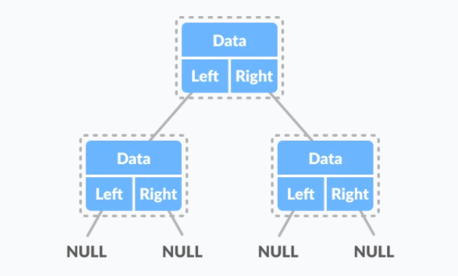
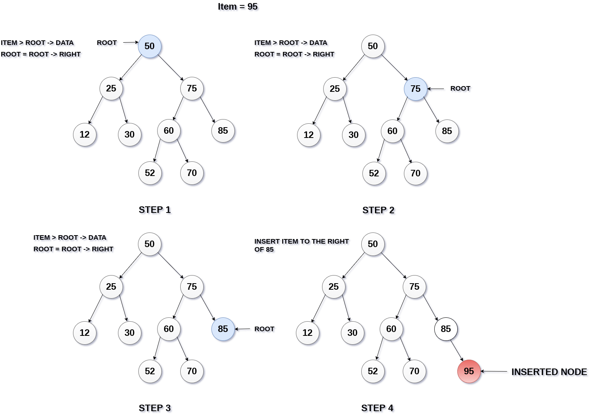
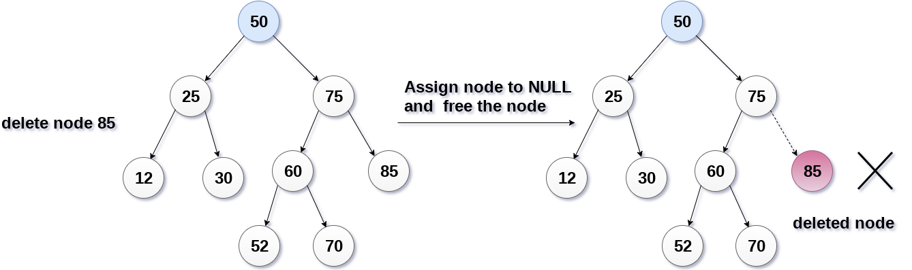
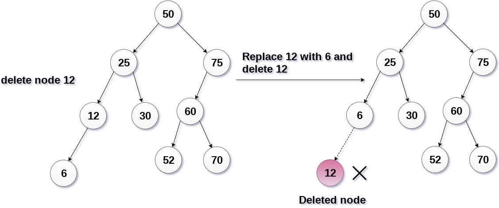
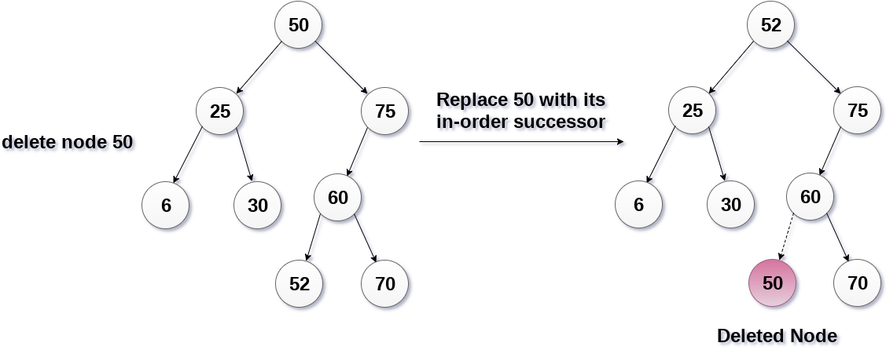

Binary Search Tree
Binary Tree
Tree represents the nodes connected by edges. A binary tree has a condition that each node can have a maximum of two children. A binary tree has the benefits of both an ordered array and a linked list as search is as quick as in a sorted array and insertion or deletion operation are as fast as in linked list.

Binary search tree is a Binary tree that quickly allows us to maintain a sorted list of numbers.
Basic Operations of Binary search Tree
- Insert: Add an element to the tree
- Delete: Remove an element from the tree
- Search: Search an element in the tree
- Inorder traversal
- Preorder traversal
- PostOrder traversal
Binary Tree Representation
struct node
{
int data;
struct node *left;
struct node *right;
};

Search
If the value is below the root, we can say for sure that the value is not in the right subtree; we need to only search in the left subtree and if the value is above the root, we can say for sure that the value is not in the left subtree; we need to only search in the right subtree.
If the value is not found, we eventually reach the left or right child of a leaf node which is NULL and it gets propagated and returned..
If root == NULL
return NULL;
If number == root->data
return root->data;
If number < root->data
return search(root->left)
If number > root->data
return search(root->right)
Insert
Inserting a value in the correct position is similar to searching because we try to maintain the rule that the left subtree is lesser than root and the right subtree is larger than root.
We keep going to either right subtree or left subtree depending on the value and when we reach a point left or right subtree is null, we put the new node there.
Algorithm
If node == NULL
return createNode(data)
if (data < node->data)
node->left = insert(node->left, data);
else if (data > node->data)
node->right = insert(node->right, data);
return node;
Deletion
There are three situations of deleting a node from binary search tree.
The node to be deleted is a leaf node
In the first case, the node to be deleted is the leaf node. In such a case, simply delete the node from the tree.
Deletion
The node to be deleted has only one child.
1.Replace that node with its child node.
2.Remove the child node from its original position.

Deletion
The node to be deleted has two children.
1.Get the inorder successor of that node.
2.Replace the node with the inorder successor.
3.Remove the inorder successor from its original position.

Applications
- A Self-Balancing Binary Search Tree is used to maintain sorted stream of data. For example, suppose we are getting online orders placed and we want to maintain the live data (in RAM) in sorted order of prices.
- A Self-Balancing Binary Search Tree is used to implement doubly ended priority queue.
- There are many more algorithm problems where a Self-Balancing BST is the best suited data structure, like count smaller elements on right, Smallest Greater Element on Right Side, etc.